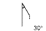

Wrist flexibility and/or resistance to extensor stretching are responsible for the resulting angle of flexion at the wrist. The examiner straightens the infant's fingers and applies gentle pressure on the dorsum of the hand, close to the fingers. From extremely pre-term to post-term, the resulting angle between the palm of the infant's hand and forearm is estimated at; >90°, 90°, 60°, 45°, 30°, and 0°. The appropriate square on the score sheet is selected.
| SIGN | NEURO-MUSCULAR MATURITY SCORE | SIGN SCORE | ||||||
| -1 | 0 | 1 | 2 | 3 | 4 | 5 | ||
| Square Window |
 |
 |
 |
 |
 |
|||